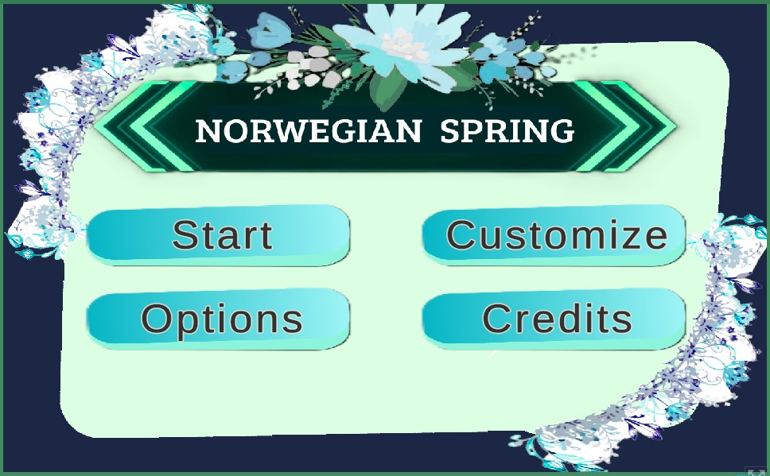
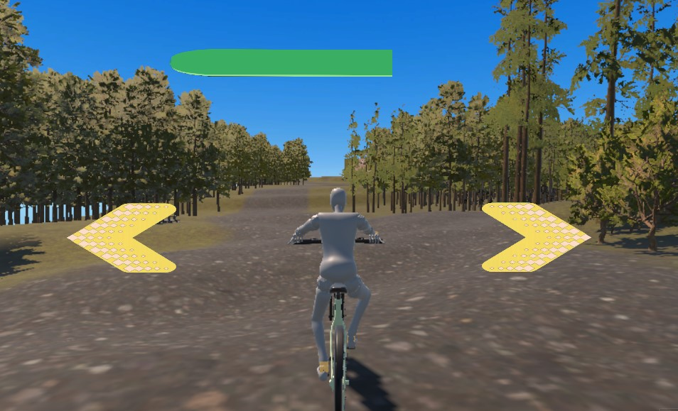
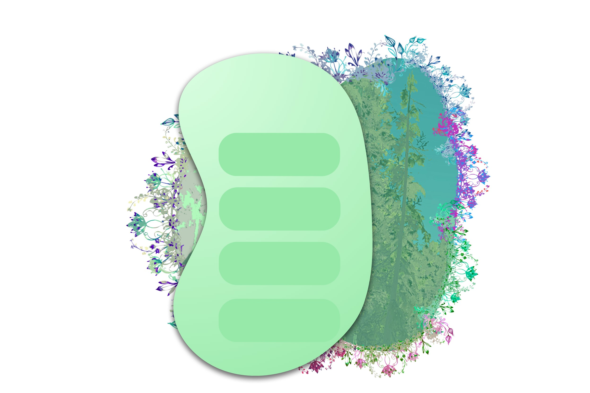
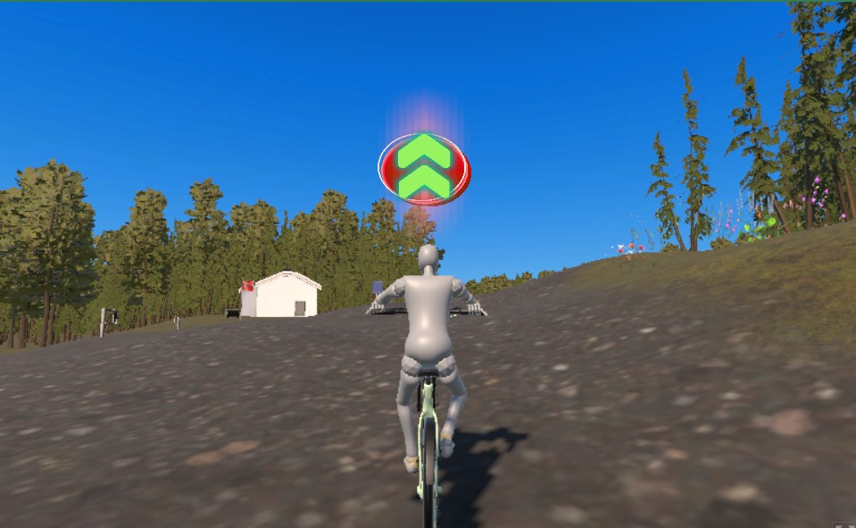
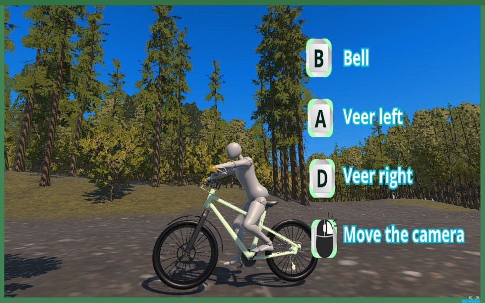
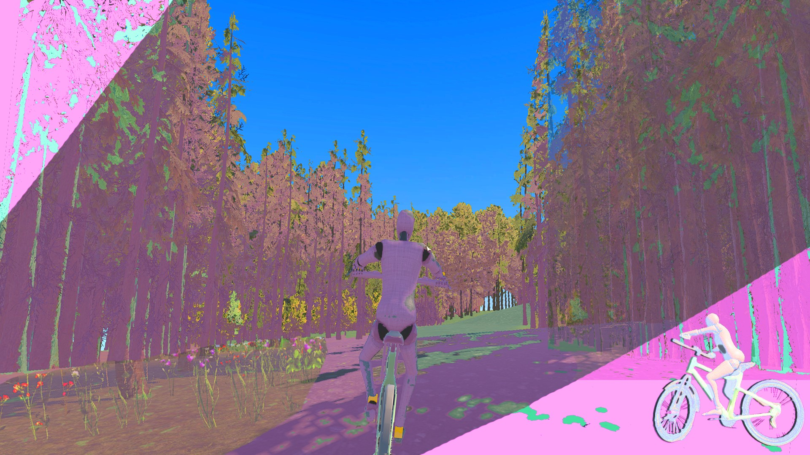

Archivos de Diseño (Capturas)







Incursión colaborativa para la Comfy Jam Spring (Tema: Seamless Loop). Un equipo internacional unido para crear una experiencia pacífica: un paseo infinito en bicicleta por un pueblo noruego, utilizando modelos 3D reales de Noruega.




